YOUNG ROOTS: back to old trades
In una società sempre più veloce e tecnologica, sono in continuo aumento gli under 35 che - complice anche la precarietà lavorativa e le condizioni in cui vengono impiegati - decidono di abbandonare la frenesia delle città per ritornare a contatto con la natura.
Sono i giovani farmer, una generazione che ritorna ai vecchi mestieri della terra e dell’artigianato, riprendendo in mano aziende di famiglia o affiancando vecchi artigiani per impararne il mestiere. Si ritorna così ad essere agricoltori, apicoltori, artigiani, falegnami, intrecciando vecchie tradizioni ad uno sguardo nuovo.
Young Roots nasce nel 2020 con l’incontro di due giovani farmer, Andrea e Gianluca, fratelli che riscattano la vecchia azienda agricola di famiglia per riportarla in vita.
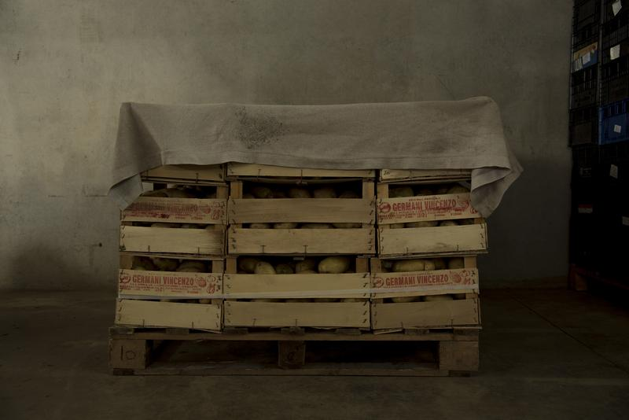
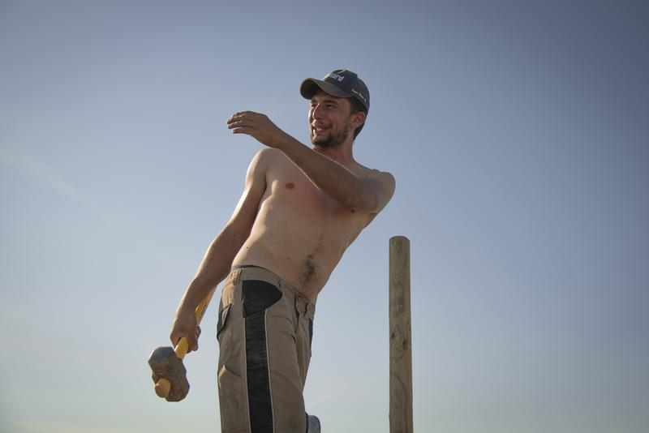
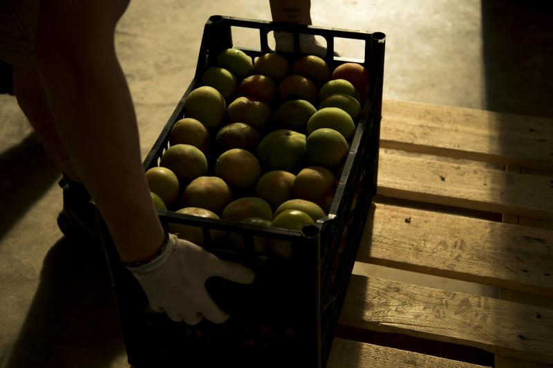
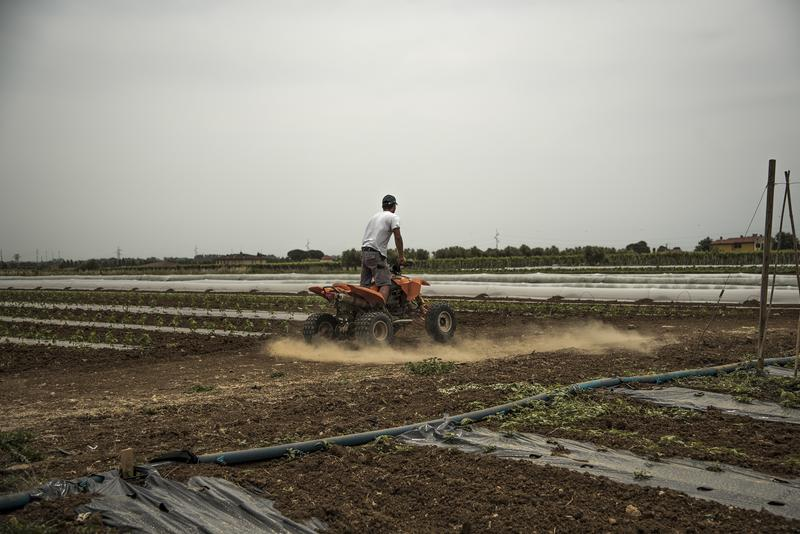
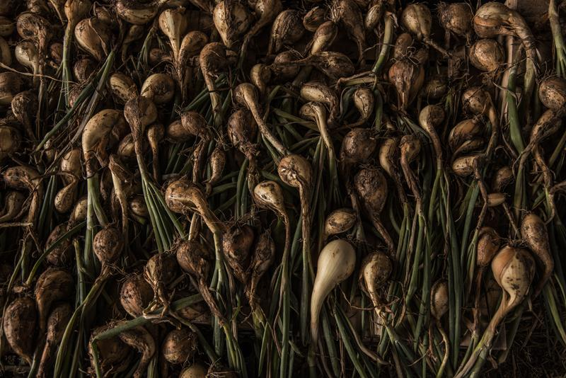
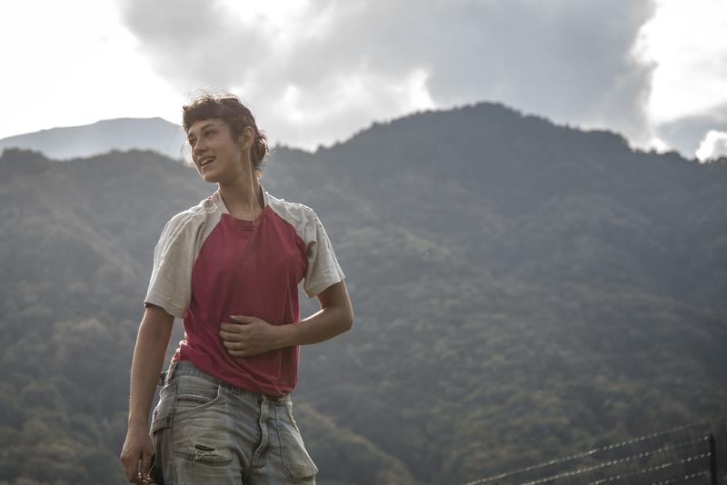
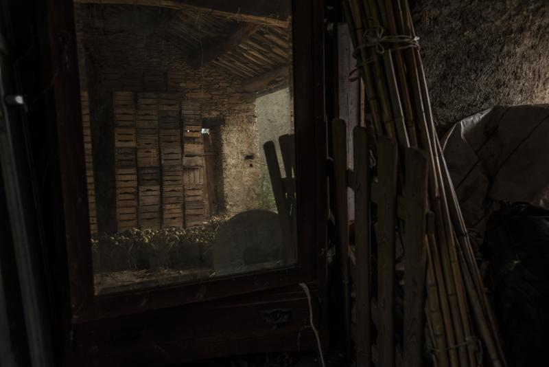
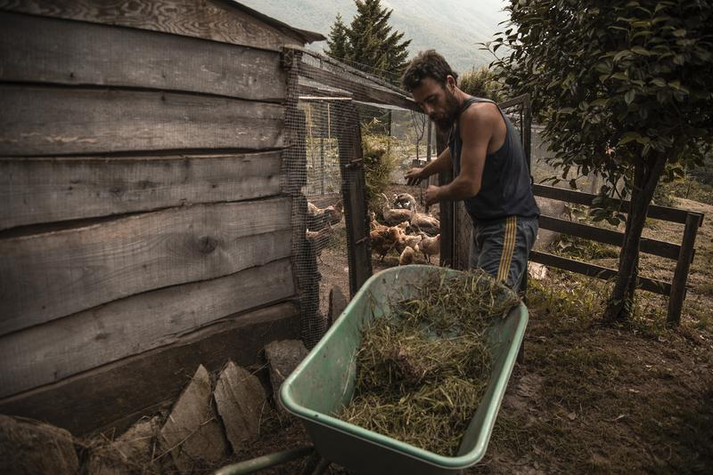
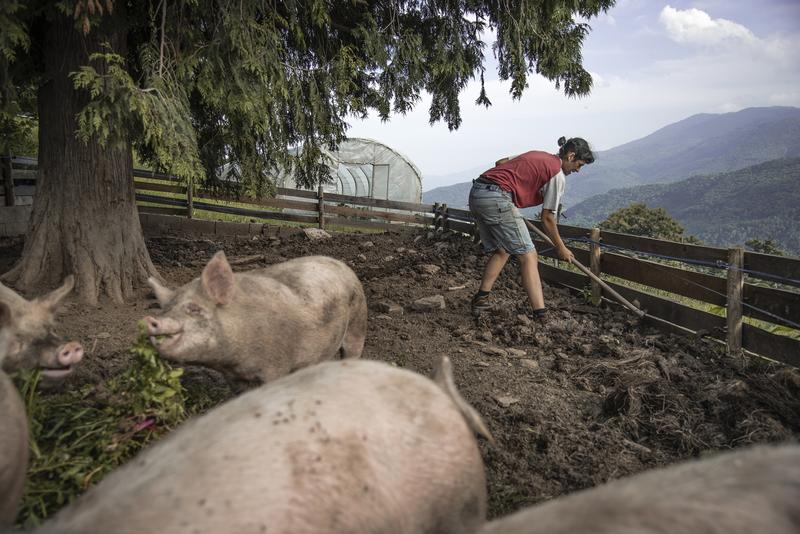
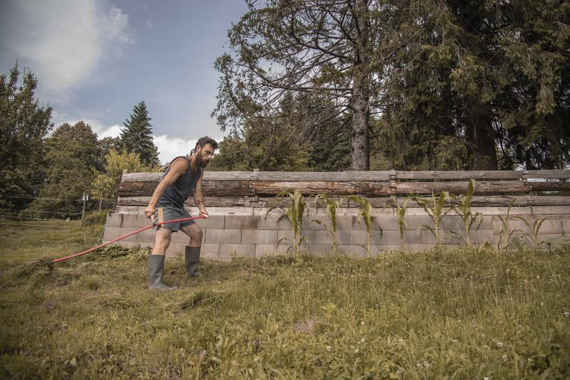
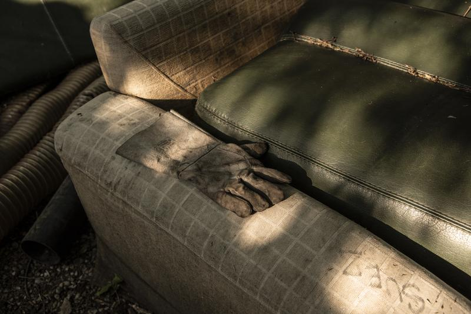
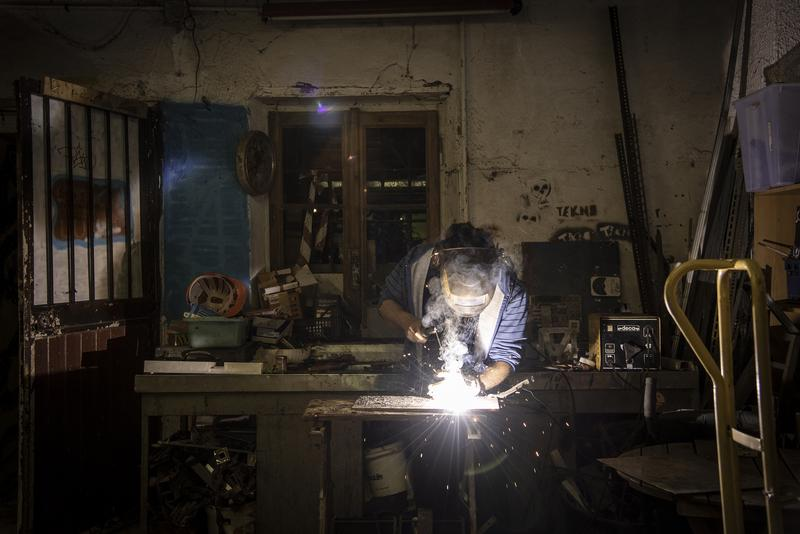
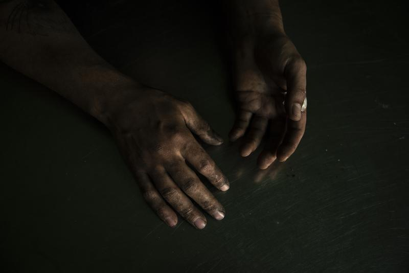
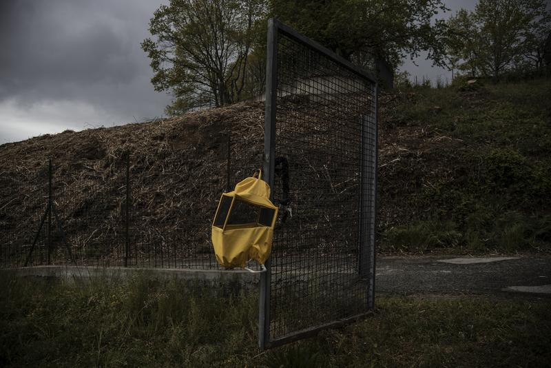
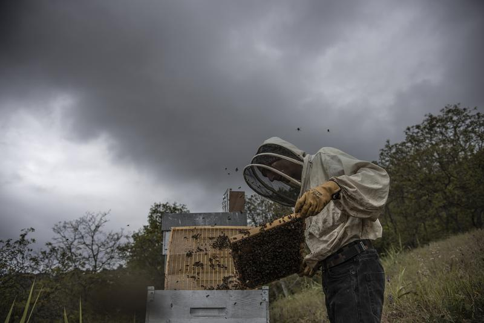
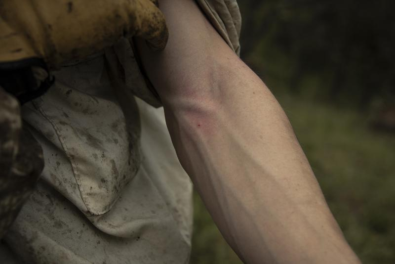
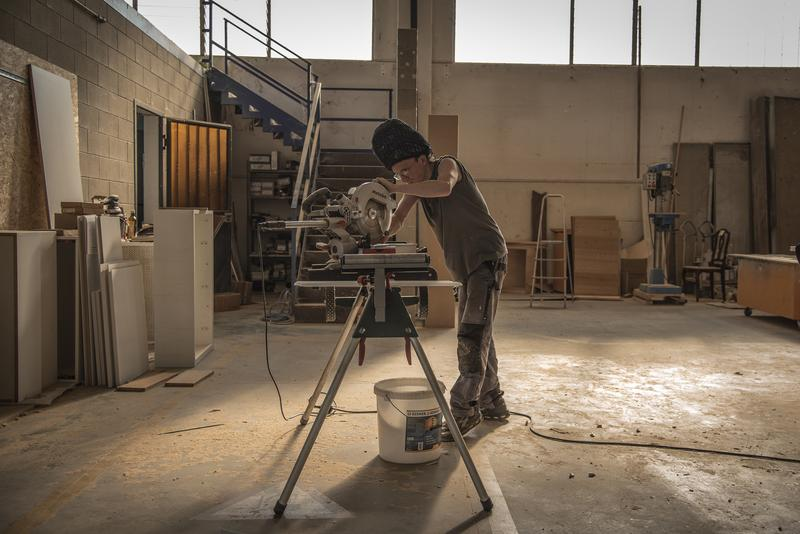
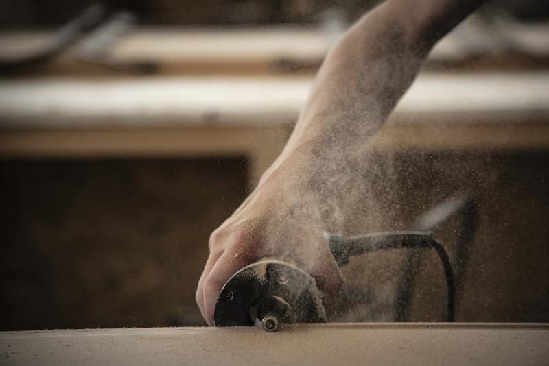
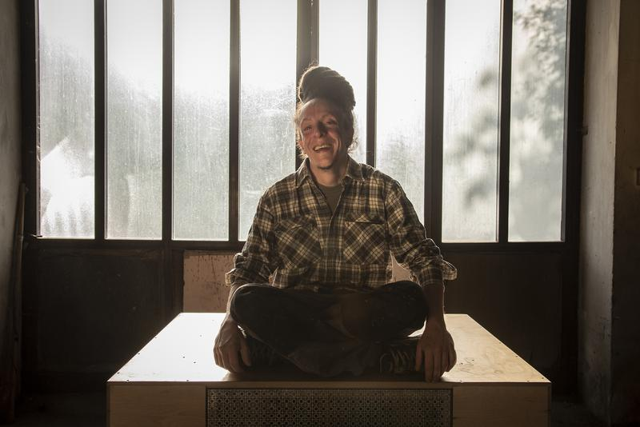
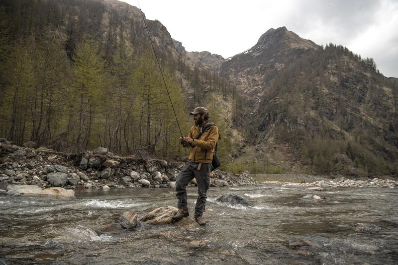
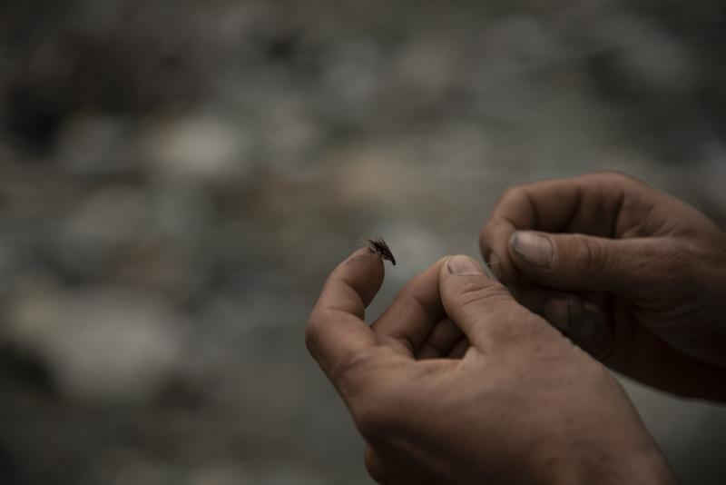
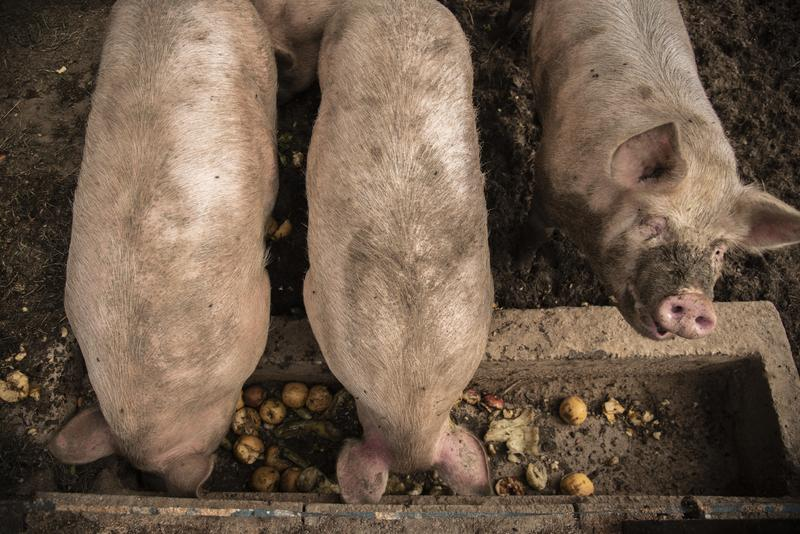